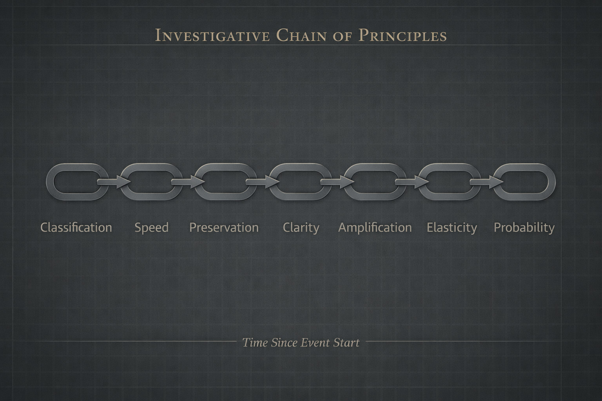

Framework
The Investigative Trajectory Model.
The Unfound Project analyzes disappearance cases through a structural model describing how classification, speed, preservation, clarity, and amplification shape investigative trajectory over time.
Overview
A structural model of investigative divergence
The Investigative Trajectory Model is the central analytical framework used by The Unfound Project. It does not attempt to explain disappearance through a single cause. Instead, it examines how institutional response patterns shape whether a case gains clarity, narrows quickly, or remains unresolved.
The model treats missing persons investigations as evolving trajectories rather than static incidents. Each stage influences the next.

Model Stages
How trajectory develops
Classification
Initial case framing influences urgency, escalation thresholds, and the interpretation of risk from the beginning.
Response Speed
Timing affects what evidence can still be preserved, requested, reconstructed, or directionally understood.
Evidence Preservation
Physical, digital, and testimonial evidence degrade quickly when early action does not occur.
Investigative Clarity
Clarity increases when directional anchors survive and decreases when the investigative record remains fragmented.
Public Amplification
Media visibility and public awareness can preserve attention, generate tips, and extend investigative elasticity.
Elasticity & Probability
Cases that retain preserved evidence and public visibility often sustain more options over time than cases that narrow early.
Interpretation
Why the model matters
Missing persons cases often appear singular and idiosyncratic. But when examined comparatively, recurring structural patterns become visible. Some cases narrow because early evidence disappears. Others retain visibility because partial evidence survives. Others still appear well documented but fail because continuity breaks.
The framework helps compare these pathways systematically.